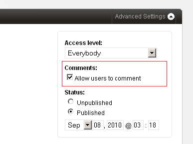

Comments
Couch allows the submission of comments on pages created by it but this must first be permitted by you.
To do so, the commentable parameter of the template tag has to be set to '1' for each template that you wish to allow comments for.
Thus if, for example, comments are to be turned on for pages cloned out of blog.php, the following change needs to be done to the template tag (usually placed in the HTML head tag) within blog.php -
<cms:template title='Blog' clonable='1' commentable='1'>
<!-- The editable and folder tags can go here -->
</cms:template>
Once commenting is turned on for a template, each of the page created out of it will have the following option available as its advanced setting in the admin panel while editing it -

By default, 'Allow users to comment' is checked for every new page. You can check this option off to disallow comments on a particular page. If you turn this off after a page has already had some comments, the existing comments will be retained but any further comments will be disallowed.
You'll find the following two settings in config.php file which are worth noting -
// 20.
// A setting of '1' will necessitate the admin to approve comments before they get published.
// '0' will publish comments immediately.
// A setting of '1' is strongly recommended in order to avoid spam.
define( 'K_COMMENTS_REQUIRE_APPROVAL', 1 );
// 21.
// Minimum time interval required between two comments posted by the same user (in seconds).
// Prevents comment flooding. A setting of 5 minutes (300 seconds) is recommended.
define( 'K_COMMENTS_INTERVAL', 5 * 60 );
Once submission of comments has been allowed, a form needs to be displayed on every commentable page to allow the users to avail this facility.
The following discussion about the comment form assumes that you are already familiar with the form tag which is used to create it.
COMMENT SUBMISSION
Roughly speaking, a comment form needs to have three inputs (of type text) named k_author, k_email and k_link. These are used to input the commentator's name, his email and a link to his site. The form also needs to have a textarea named k_comment for inputting the actual comment.
Only the k_comment field is mandatory for Couch to save the comments. However, if needed, you can make any of the other fields mandatory too by setting their required parameter.
On successful submission of the form, the process_comment Couch tag can be invoked to process the submitted comment and save it into the database.
Following is a complete snippet that generates such a form -
<cms:if k_is_commentable >
<div class="comment-form" >
<h3>Post a comment</h3>
<cms:form method="post" class="k_form">
<cms:if k_success >
<cms:process_comment />
<cms:if k_process_comment_success>
<cms:send_mail from=k_email_from to=k_email_to subject='Comment posted'>
The following comment has been posted at your site:
<cms:show k_success />
</cms:send_mail>
<div class="k_successmessage">
<p>
Thank you for the feed back! <br>
Your comment awaits moderation and will be published as soon as reviewed by the Admin.
</p>
</div>
<cms:else />
<div class="k_errormessage">
<p>
Could not post comment! <br>
The following error occured while processing your comment:<br>
<cms:show k_process_comment_error />
</p>
</div>
</cms:if>
<cms:else />
<cms:if k_error >
<div class="k_errormessage">
<h2>Fields incomplete!</h2>
<ul>
<cms:each k_error >
<li><cms:show item /></li>
</cms:each>
</ul>
</div>
</cms:if>
<cms:if k_logged_out >
<p class="comment-input">
<cms:input type="text" name="k_author" size="22" tabindex="1" required="1"/>
<label for="author"><small>Name *</small></label>
</p>
<p class="comment-input">
<cms:input type="text" name="k_email" size="22" tabindex="2" validator="email" required="1"/>
<label for="email"><small>Email * (will not be published)</small></label>
</p>
<p class="comment-input">
<cms:input type="text" name="k_link" value="http://" size="22" tabindex="3" />
<label for="link"><small>Website</small></label>
</p>
<cms:else />
<p>
Logged in as <b><cms:show k_user_title /></b>.
<a href="<cms:show k_logout_link />" onclick="if( confirm('Are you sure you want to logout?') ) { return true; } return false;">Logout »</a>
</p>
</cms:if>
<p class="comment-input">
<cms:input type="textarea" name="k_comment" style="width:93%" rows="10" cols="10" tabindex="4"
validator_msg="required=Please enter something as comment"
required="1" />
<br>
<small>
<cms:html_encode>
You can use the following HTML tags: <a><br><strong><b><em><i><blockquote><code><ul><ol><li><del>
</cms:html_encode>
</small>
</p>
<cms:if k_logged_out >
<p class="comment-input">
<label for="captcha"><small>Please enter this word in the textbox below</small></label><br>
<cms:input type="captcha" name="captcha" format='i-r-t' />
</p>
</cms:if>
<cms:input type="submit" value="Submit" name="submit"/>
</cms:if>
</cms:form>
</div>
</cms:if>
TIP: The above snippet can be saved into a file named, for example, comment-form.inc within the snippets folder and then be used in any template by using the embed tag -
<cms:embed 'comment-form.inc' />
If you have been through the form tag discussion, the code above should look familiar. We'll discuss a few features of the snippet though -
The form consists of the four aforementioned input tags - k_author, k_email, k_link, k_comment. A fifth in the form of captcha has also been added. Please never omit the captcha from any of your forms or you risk facing a deluge of spam.
To fight spam always use a captcha during comment submission and always require approval of comments before publishing them.
As a way of warding off spam, Couch also rejects duplicate comments and multiple comments that originate from the same place too quickly.
Note that we first check that no registered user is logged in (k_logged_out) before showing the input fields for name, email, link and the captcha. If a user is already logged in, the values for these inputs can be had from his registration profile and hence only the textbox for inputting comments needs to be displayed to him.
On successful submission of the form (k_success), we simply invoke the process_comment tag.
This tag processes the submitted values and attempts to save the comment into the database. If it succeeds, it sets the k_process_comment_success variable else the k_process_comment_error is set.
Upon finding the k_process_comment_success set, an email is sent to the admin informing him about the pending comment that awaits his approval.
Use the comments tab of the Couch admin panel to administrate the submitted comments.
LISTING COMMENTS
Once the submission of comments is in its place as explained above, one would now like to list all the submitted comments.
Usually only the comments belonging to a particular page need to be listed on that page. However, we can list comments belonging to all (or any) of the commentable pages or belonging to only pages cloned out of some of the templates etc (e.g. the latest 5 comments that are routinely displayed on the home pages of sites) on any page.
The comments tag is used to list comments based on the parameters passed to it.
It is closely related to the pages tag and hence shares several of the parameters accepted by the pages tag.
<cms:comments limit='5'>
<!-- sets comment related variables here -->
</cms:comments>
The above snippet will loop through the latest five comments, regardless of the templates their pages belong to.
At each iteration of the loop, this tag makes available the data associated with the comment being currently iterated by setting the variables listed below.
VARIABLES
For each comment, the following variables (containing the data submitted by the user and the parent page) are made available by Couch -
- k_comment_id
- k_comment (the actual comment text)
- k_comment_author_id
- k_comment_author
- k_comment_author_email
- k_comment_author_website
- k_comment_date
- k_comment_link
- k_comment_anchor
- k_comment_page_id
- k_comment_page_title
- k_comment_page_name
- k_comment_template_name
In addition to these variables, the pagination related variables that describe the current status of the loop are also set. Please see pagination for details.
PARAMETERS
Normally comments tag will fetch all the available approved comments.
It can be constrained into fetching comments from only certain pages by setting the masterpage, page_id and page_name parameters.
Please see: Tags Reference - Comments for a complete list of parameters that are accepted by this tag and how they can be used.
EXAMPLE
As an example of the comments tag, the following is a real world snippet that when placed in a template, shows the comments belonging to the cloned page that is currently displayed.
Notice the use of the variable k_page_id (always set by Couch to the id of the current page in page-view) to constrain the comments tag to fetch only comments belonging to the current page.
Also notice the use of the gravatar tag.
<cms:if k_is_page >
<cms:comments page_id=k_page_id limit='5' order='asc' paginate='1'>
<cms:if k_paginated_top >
<h3><cms:show k_total_records /> Comments</h3>
<ul id="commentlist">
</cms:if>
<li id="comment-<cms:show k_comment_id />">
<cms:gravatar email="<cms:show k_comment_author_email />" size="36" />
<p>
<cite>
<span class="commenter">
<cms:if k_comment_author_website >
<a class="url" rel="external nofollow" href="<cms:show k_comment_author_website />"><cms:show k_comment_author /></a>
<cms:else/>
<cms:show k_comment_author />
</cms:if>
Says:
</span>
<br/>
<span class="meta"><a name="<cms:show k_comment_anchor />"><cms:date k_comment_date format='F j, Y'/> at <cms:date k_comment_date format='h:ia'/></a></span>
</cite>
</p>
<div class="comment_text">
<cms:show k_comment />
</div>
</li>
<cms:if k_paginated_bottom >
</ul>
</cms:if>
<cms:paginator />
</cms:comments>
</cms:if>